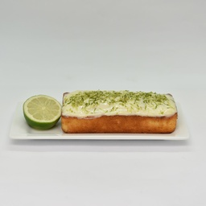

Receita Bolo de Limão

Ingredientes
- 2 Ovos
- 3 Colheres de Manteiga
- 1 xícara de leite
- 2 limão descascado
Modo de Preparo
- Bater no liquidificador as gemas, o açúcar e margarina
- Em seguida juntar o suco e raspas limão, o leite e farinha aos poucos
- Por último misturar, delicadamente, as claras em neve e o fermento
- Espalhar a massa em uma assadeira retangular média já untada e assar no forno (já preaquecido) por mais ou menos 40 minutos em temperatura de 180ºC